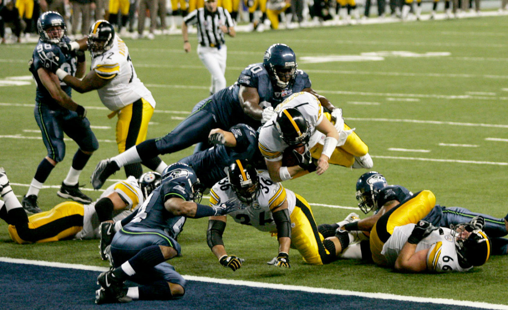
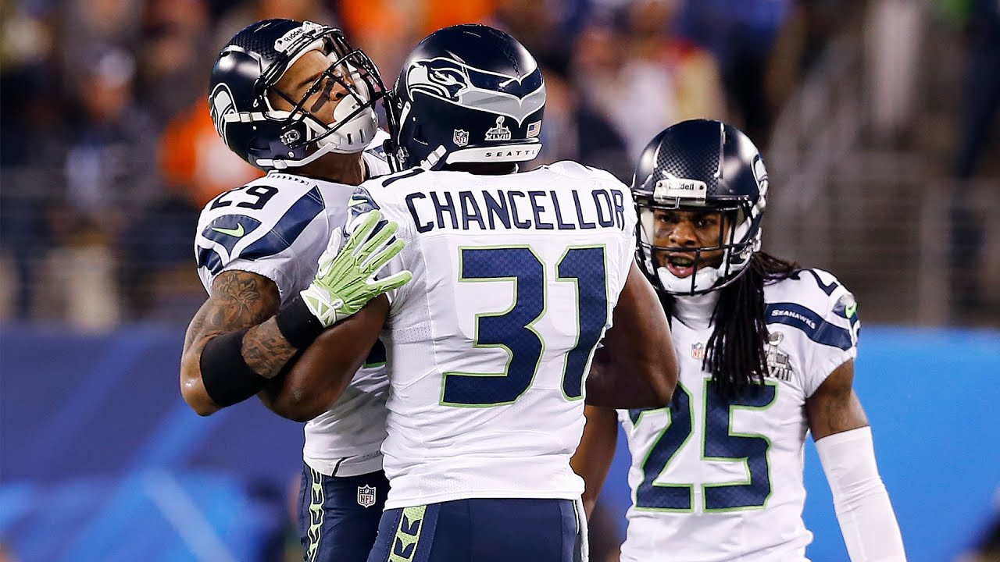
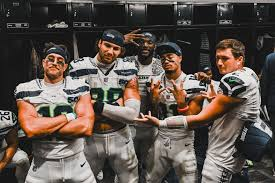

LAfter moving from the American Football Conference (AFC) to the National Football Conference (NFC) in 2002, the team had much better success.
With players like Matt Hasslbeck, Sean Alexander, and Walter Jones, the Seahawks made their first Super Bowl in 2005, for Super Bowl XL (40).
Unfortunately, with some controversial officiating, they came short of victory and lost.

Following this, the team hired Pete Carroll in 2010 as their new head coach. And after aquirring key defensive players like Richard Sherman,
Kam Chancellor, and Earl Thomas, the Leigon of Boom was formed, arguabbly the greatest defense in NFL history. With the defense, and key offensive players
like Russell Wilson, Marshawn Lynch, and Doug Baldwin the team won thier first Super Bown in 2014 agaisnt the Denver Broncos in 2014.

Currently, the Seahawks are coached by Mike MacDonald, with a promising core of defensive stars,
combined with a lethal passing game led by Sam Darnold and Jaxon Smith-Njigba.
